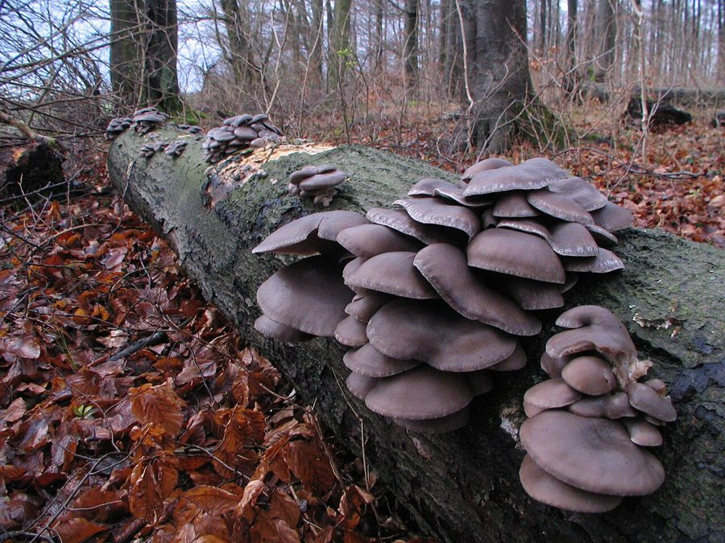

ढींगरीOyster Mushroom
Pleurotus ostreatus · Pleurotaceae · FNG-0005

- Scientific name
- Pleurotus ostreatus (Jacq.) P.Kumm.
- Family
- Pleurotaceae
- Hindi
- ढींगरी / ओएस्टर मशरूम
- Status here
- native
- IUCN
- not evaluated
When to look कब देखें
Expected mainly in July, August, September, October, November, December, January, February.
ढींगरी / Oyster Mushroom
Pleurotus ostreatus (Jacq.) P.Kumm. — Pleurotaceae
> ढींगरी — सड़े-मृत आम और पीपल की लकड़ी पर उगने वाला स्लेटी-सफेद छाते जैसा मशरूम। पंखे या सीप की आकृति में, एक-के-ऊपर-एक झुंड में उगता है। मानसून के बाद अगस्त-नवंबर में सबसे अधिक दिखता है। बस्ती जिले के गाँवों में इसे जंगली ढींगरी कहते हैं — सरसों के तेल में भूनकर खाते हैं। खेती भी होती है धान के पुआल पर — और यही वजह है कि यह दुनिया का दूसरा सबसे ज़्यादा उगाया जाने वाला मशरूम है। लकड़ी की सड़न से ही यह उगता है — कभी सीधे मिट्टी से नहीं।
Quick Identification त्वरित पहचान
| Feature | Description |
|---|---|
| Cap | Fan-shaped to broadly convex; 5–20 cm; smooth wavy margin |
| Cap colour | Grey to blue-grey when young; fades to cream or pale brown with age |
| Gills | White; crowded; decurrent (running down stalk); forking near base |
| Stalk | Short (1–3 cm); off-centre or lateral; white; firm |
| Spore print | White to lilac-white |
| Growth | Always in overlapping tiered clusters on wood — never from soil |
| Smell | Pleasant, distinctly mushroomy |
Field tip: Any cluster of pale grey fan-shaped caps growing in overlapping tiers on a dead mango or Ficus log is an Oyster Mushroom. The white gills running down the short off-centre stalk are distinctive. No poisonous species grows in this growth form on wood in eastern UP. To confirm: lay the cap on dark paper overnight — white spore print confirms identity.
Morphology आकारिकी
| Feature | Measurement |
|---|---|
| Cap (pileus) diameter | 5–20 cm |
| Stipe height | 1–3 cm |
| Stipe diameter | 5–20 mm |
| Spore dimensions | 8–11 µm × 3–4 µm |
- Cap (Pileus): Fan-shaped to broadly convex; 5–20 cm across; smooth; grey to blue-grey when young, fading to cream or pale brown; wavy, lobed margin
- Gills: White to cream; crowded; decurrent (running down the stalk); forking near attachment
- Stalk (Stipe): Short, stubby, 1–3 cm, off-centre or lateral; white; firm; covered with fine down at base
- Spore print: White to lilac-white
- Flesh: White, firm, slightly elastic; does not change colour when cut; pleasant mushroom smell
- Clusters: Always grows in overlapping tiered clusters of multiple caps from a single point; solitary individuals rare
- Mycelium: White, thread-like; penetrates deep into wood substrate; bioluminescent mycelium reported in some strains (faint blue-green glow in darkness)
Ecological Role पारिस्थितिक भूमिका
Wood decomposer — white-rot fungus. Pleurotus ostreatus is a powerful lignin-degrading fungus. It breaks down both lignin and cellulose in dead hardwood through secretion of peroxidase and laccase enzymes — reducing solid wood to soft white fibrous residue (white rot). This decomposition is essential: without wood-rotting fungi, forests would be buried in undecayed timber.
Carbon and nutrient release. By decomposing lignin (one of the most chemically stable organic compounds), Pleurotus releases carbon, nitrogen, and mineral nutrients locked in dead wood back into the soil system — making them available to trees, shrubs, and soil organisms.
Habitat creation. The cavities created by Pleurotus colonisation in standing dead wood become nesting sites for cavity-nesting birds, bats, and insects. The softened wood is also easily worked by woodpeckers probing for insect larvae.
Food web link. Fruiting bodies are consumed by insects (beetles, flies, springtails) and small mammals; spores are dispersed in their frass and digestive systems.
Mycoremediation potential. Pleurotus enzymes (laccases, peroxidases) degrade not just lignin but also petroleum hydrocarbons, synthetic dyes, and some pesticides. This capacity — mycoremediation — is being actively researched for cleaning contaminated soils and water.
Life Cycle / Phenology जीवन चक्र
- Mycelial phase: Perennial — mycelium persists in wood for years, extending as the substrate is consumed
- Fruiting trigger: Cool, humid conditions; monsoon and early winter are peak fruiting seasons in UP
- Peak fruiting: August–November (post-monsoon) and December–February (cool mist); sporadic in other months
- Spore dispersal: White spores released in clouds from gills; wind-dispersed; germinate on freshly exposed wood surface
- Fruiting body lifespan: 5–10 days; rapidly becomes host to fly larvae (Sciaridae, Phoridae); older caps dry and curl
- Substrate: Dead or dying hardwood; occasionally living trees weakened by injury or root rot
Host Plants or Prey आहार
Substrate (decomposition host):
- Mango (Mangifera indica, FLR-0011) — primary host in eastern UP orchards
- Ficus spp. — Ficus religiosa (FLR-0006), Ficus benghalensis (FLR-0010)
- Mahua (Madhuca longifolia, FLR-0021)
- Neem (Azadirachta indica, FLR-0009) — less commonly
- Kadam (Neolamarckia cadamba, FLR-0022)
- Agricultural waste — sugarcane bagasse, rice straw, wheat straw (cultivated substrate)
Food source for: Beetles, fruit flies, fungus gnats, slugs, porcupines, deer
Predators / Natural Enemies शत्रु
- Fungus gnats (Bradysia spp., Sciaridae) — larvae tunnel through flesh, rapidly destroying caps
- Fly larvae (Phoridae, Cecidomyiidae) — infest gills within days of fruiting body emergence
- Slugs and snails — graze caps overnight
- Competing fungi — Trichoderma (green mould) is the primary competitor in cultivation and in nature; invades mycelium and destroys fruiting bodies
- Bacteria — bacterial blotch (Pseudomonas tolaasii) causes brown patches in high humidity
Agricultural / Human Relevance कृषि प्रासंगिकता
Cultivation on agricultural waste — major livelihood. Pleurotus ostreatus (and the closely related P. florida, P. sajor-caju) is the second-most cultivated mushroom globally after Lentinula edodes (shiitake). In eastern UP, oyster mushroom cultivation on paddy straw and sugarcane bagasse is an established and expanding cottage industry — ideal for small farmers because:
- No requirement for specialised timber or expensive compost
- Short cropping cycle (30–40 days from inoculation to harvest)
- Can be cultivated in a spare room, shade net, or earthen structure
- Substrate (paddy straw) is freely available post-harvest
State government schemes (UP Horticulture Department) subsidise spawn and training for mushroom growers. Women's self-help groups in several Basti district blocks have taken up oyster mushroom cultivation as supplemental income.
Nutritional value. 30–40% protein by dry weight; high in B vitamins (B2, B3, B5, B12 in some strains); significant iron and zinc content; low calorie. For landless labourers and smallholders, cultivated oyster mushrooms are an accessible, affordable protein source.
Medicinal properties (research-backed): Beta-glucans stimulate immune response; lovastatin (same compound used in cholesterol-lowering drugs) naturally present; pleuran polysaccharides show antiviral activity against influenza strains.
Wild collection. Villagers in Basti district collect wild Pleurotus from fallen mango and Ficus logs during monsoon — a traditional practice without formal documentation. The mushroom is recognised as ढींगरी and eaten fried in mustard oil.
Expected Locally स्थानीय रूप से अपेक्षित
Not a field record. Written from published accounts for eastern Uttar Pradesh. No confirmed local sighting yet — if you have seen it, that is what the atlas needs.
अभी तक स्थानीय पुष्टि नहीं। यह विवरण प्रकाशित स्रोतों से है, किसी अवलोकन से नहीं।
Wild fruiting bodies appear on dead mango trunks and fallen Ficus logs in Basti district orchards and village commons during August–November, especially after rain following a dry spell. Identification is straightforward — no poisonous look-alikes grow in similar configurations on wood in this region. The smell is distinctly pleasant. Cultivation kits using paddy straw inoculated with spawn are increasingly available in district-level agricultural input shops; several villages near Basti town have active mushroom-growing households.
Distribution वितरण
Global range: Widespread throughout temperate and subtropical regions of the Northern Hemisphere, including Europe, North America, and Asia.
In India: Found across temperate and subtropical regions, particularly in forested areas and orchards of northern, central, and eastern India.
In Uttar Pradesh: Common state-wide; associated with broadleaf woodlands, orchards (especially mango), and agro-forestry zones.
In Basti district / eastern UP: Common resident; widely collected from old mango orchards and wood-decay sites, and extensively cultivated in village farms.
Range notes: Global range status has not been formally assessed by IUCN.
Research Questions शोध प्रश्न
- What wild Pleurotus species are actually fruiting on different tree species around Basti — are P. ostreatus, P. florida, and P. sajor-caju all present, or are they one variable species?
- Does traditional wild collection of Pleurotus from mango orchards provide sufficient inoculum to sustain local wild populations, or does collection create supply-demand pressure?
- What is the mycoremediation potential of locally isolated Pleurotus strains against pesticide residues commonly used in Basti district rice fields (chlorpyrifos, malathion)?
- Can the white-rot enzymatic capacity of Pleurotus mycelium be used to biodegrade agricultural plastic waste (polyethylene mulch films)?
- Do the beta-glucan and lovastatin levels in locally collected wild Pleurotus differ measurably from commercially cultivated strains — and does substrate (mango wood vs. paddy straw) affect medicinal compound concentration?
Similar Species मिलती-जुलती प्रजातियाँ
| Species | Key Difference |
|---|---|
| Pleurotus florida | Very similar; slightly wider-spaced gills; faster fruiting; most commonly cultivated strain in UP |
| Pleurotus sajor-caju (Grey Oyster) | More funnel-shaped; greyer; grows more commonly in tropical monsoon conditions |
| Crepidotus spp. | Much smaller (1–3 cm); gills brown; no stalk; grows on dead twigs |
| Bracket fungi (Ganoderma lucidum, FNG-0004) | Hard, woody, shiny upper surface; pores beneath (not gills); perennial |
Taxonomy & Classification वर्गीकरण
Original description. Pleurotus ostreatus was originally described by Nikolaus Joseph von Jacquin in 1774 as Agaricus ostreatus in his Flora Austriaca (vol. 2, page 24). It was transferred to the genus Pleurotus by Paul Kummer in 1871 in his work Der Führer in die Pilzkunde (page 104). The species name ostreatus means "oyster-like" in Latin, referring to the shape of the cap.
Subspecies. Monotypic — no subspecies are currently recognised.
Family and order placement. Pleurotus ostreatus belongs to the family Pleurotaceae, order Agaricales, and phylum Basidiomycota. Pleurotaceae is a family of gilled mushrooms that are wood-decaying saprophytes or nematodes-trapping parasites.
Phylogenetic notes. Modern molecular phylogenetics (e.g., Vilgalys & Sun 1994) confirms Pleurotus ostreatus as a distinct species within a complex of closely related taxa, including Pleurotus pulmonarius and Pleurotus populinus. No major taxonomic controversies are currently active for this species.
IUCN status rationale. This species has not been formally assessed by the IUCN Red List. Based on local agricultural and forestry observations, the population in the Gangetic plain appears stable due to the abundance of domestic wood substrates (such as mango orchards) and expanding commercial cultivation.
Photo Gallery फोटो गैलरी
References संदर्भ
- Jacquin, N.J. (1774). Flora Austriaca. Vol. 2. L.T. Kraus, Vienna. [original description]
- Kummer, P. (1871). Der Führer in die Pilzkunde. Luppe, Zerbst. [genus transfer]
- Vilgalys, R. & Sun, B.L. (1994). Association and hybridization between species of the Pleurotus ostreatus complex. Mycologia, 86(1), 77–85.
- Stamets, P. (2000). Growing Gourmet and Medicinal Mushrooms. Ten Speed Press, Berkeley.
- Rai, R.D. & Arumuganathan, T. (2008). Post Harvest Technology of Mushrooms. National Research Centre for Mushroom, Solan, India.
- Patel, Y., Naraian, R. & Singh, V.K. (2012). Medicinal properties of Pleurotus species. World Journal of Fungal and Plant Biology, 3(1), 1–12.
- Singh, M. & Srivastava, S. (2014). Pleurotus cultivation in India: status and perspective. Mushroom Research, 23(1), 1–9.
- GBIF Occurrence Data — Pleurotus ostreatus, Uttar Pradesh (2000–2024).
Source file: species/fungi/mushrooms/oyster_mushroom.md